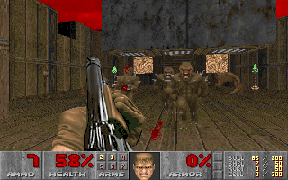

Platforms
There are a metric TON of different video game platforms that have released over the years. There are 2 major
groups that platforms are grouped into; Console and PC. There's also mobile to consider with
app games on IOS and Android but I'd rather focus on the big platforms where games of higher production value are made.
Since there are so many platforms, I will list several of my favorites to avoid covering too many.
Nintendo 64: An old yet classic system that used catridges to play games instead of the widely popular disc format
commonly used by modern consoles. It was released in September of 1997 in North America by Nintendo. The controller is strangely designed with a trident-like form that has buttons on the left and right sides,
and a single joystick on the center piece. Thinking back to my childhood, I swear this controller gave me blisters when playing for long sessions.
It definitely isn't the most comfortable controller I've held. Honestly, it feels rather uncomfortable and awkward to both hold and use. This system requires a
memory card in order to save game data.
Nintendo 64 Console
The N64 is capable of running games with simple 3D graphics. The graphical fidelity of this console is pretty pathetic, but at the time it was
extremely impressive to see games with 3D graphics in the first place. Some of the terrible looking graphics on this console's games are funny to look
back on because their primitive nature. The N64 has an awesome library of Nintendo games that are still a blast to play today. Some of my favorites are Super Mario 64, The
Legend of Zelda: Majora's Mask, Starfox 64, and Super Smash. Brothers. I feel some crazy levels of nostalgia when looking back on this system.
Gameboy Advance SP: Probably the best handheld system I've ever had the pleasure of using, this legendary little device was released in February 2003 by Nintendo. I'm pretty sure
this was the first video game console I ever owned, and it is still one of my all time favorites. This device features an impressive backlit screen unlike its predecessor, the Gameboy Advance.
It uses cartridge based media to run games. The battery life clocks in at a nice 10 hours which is more than enough, but with the backliight off it can last up to 18 hours! It is quite comfortable to hold the GBA SP even with the adult
hands that I have right now. The screen half of the GBA SP can be folded onto the half with buttons which makes it much easier to carry around portably.
GBA SP Handheld
This little guy has a 32bit processor that is capable of 2D graphics. It is not too powerful, but it provides a solid visual experience. The games look good even though they have simple graphics.
The games available on this small handheld device are some of the best ever created. Super Mario Bros. 3, Donkey Kong Country 2, and Pokemon Emerald are amongst the best games I have ever played. I have so many fond memories
of playing this little machine during entire car rides on the way to vacation spots.
Nintendo DSi: Another amazing handheld device by Nintendo that was released in April 2009. This one is a major upgrade from the Gameboy in terms power and features, but I still
prefer the Gameboy myself. The DSi feels great in the hands and folds into a clamshell that makes it easier to carry around. The DSi looks nice and plays great with well-placed
buttons and a dual screen layout that provides new gameplay possibilities. It also features a touchscreen that offers interesting ways to play using a stylus pen to swipe across the screen to perform actions.
This system is capable of solid 2D graphics with artistic styles to them, not just simple 2D sprite based graphics with a prominent pixel look to them.
Nintendo DSi Handheld
The battery life depends heavily on brightness, ranging from 3-14 hours. Sometimes the forced touchscreen gimmick felt a bit annoying, but the games are great nonetheless. The worst feature the DSi
has is the Mic integration where sometimes you have to blow into it with all your might in order to complete a certain action in a game. I really didn't like when certain games randomly made use of this
feature. This system has some really good games that I had a ton of fun with. Some of my favorite games on the DSi are Mario and Luigi: Bowser's Inside Story, Chrono Trigger, Kirby Super Star Ultra, and Pokemon Platinum.
GameCube: My first full blown video game console that wasn't a small handheld device was the GameCube. This little Cube of a console was released in November of 2001 by Nintendo. I still remember the Christmas of
2001 vividly because I got this system and three games with it as a present. It was the best gift I ever received. This console has my favorite controller of all time and has some of the best games I have ever played.
Unlike other consoles of the time, this little guy used mini discs to play games instead of normal DVD sized discs. The GameCube requires a memory card to keep save data, otherwise you'd lose progress in any game you played after
turning the console off.
GameCube Console
The GameCube could be easily carried around since it was rather small and had a handle on the back. One of my GameCubes
actually had a little screen on the top that could be flipped up and used in a car or anywhere without a T.V. It wasn't ideal to play portably, but the option was there. This console supports online for a very small select portion
of games. It has one of the best libraries of games compared to every other console out there. With gems such as Super Smash Brothers Melee., The Legend of Zelda: The Wind Waker, Super Mario Sunshine, and Metroid Prime, this console
was simply a must have. The gamecube is capable of running some pretty decent graphics and allows up to four players at once. This console also had wireless controllers.
Xbox 360: The first and last home console I've bought from Microsoft was the Xbox 360. It was released in November of 2005. This console was extremely fun to use and still has what I consider to be one of the best controllers
ever made. The 360 controller felt amazing in the hands, even for people who had larger hands like me. The bulk and weight of it truly made a comfortable difference compared to something like the tiny PlayStation 3 controller. The Xbox 360
could run some very impressive graphics and had some great online features.
Xbox 360 Home Console
Unfortunately, the base model for the Xbox 360 was not compatible with WiFi connections without an expensive adapter, and even when I did buy that adapter it failed
to work for me. Instead, I had to get the revised Slim Xbox 360 model which was black instead of the normal white color the base model used. It is widely known that the base model of this system was prone to system failure with an error known
as the "Red Ring of Death". The failure rate for the base model of the Xbox 360 was so high that Microsoft was forced to extend the warranties on all of them. I had a ton of fun with this system and it was the first time I experienced console gaming online.
It was lame that the online service was a paid subscription that cost me $60 a year, but I felt it a necessary component to play online with my cousin who lives far away from me. This console has a lot of really good games, but most of them are
FPS games. Playing this system may have given me a little genre fatigue, but I still loved the games on it. Some of my favorites are Skyrim, Call of Duty: Black Ops, and Halo: Reach.
Nintendo Wii: This system was released in November of 2006 by Nintendo. The Wii is an odd case when it comes to video game consoles. What seperates the Wii amongst the rest of the consoles are the motion controls built into the controllers. The Wii comes with a sensor
bar that tracks motion from the movements of the controllers. The Wii's motion control features turned out to be extremely popular with people all around the world, even the casual audience that doesn't normally play video games. Because of this, the Wii became
the best selling console of all time. It was really hard to find the Wii early on in its life cycle. When I went to pick mine up on launch day, there were several people waiting outside the store to buy it. The Wii was pretty cheap at launch, starting at $250.
Even if you don't know anything about video games, it is likely that you have at least heard of the Wii since it was extremely popular with just about everyone.
Wii Home Console
The Wii was a relatively weak system for the time it launched at but Nintendo was really good at making their games based around the
hardware, so that mattered little. Most 3rd party AAA games had to be scaled down significantly though. The Wii had backwards compatibility with the GameCube which was really nice for me since I had a few old GC games lying around. The Wii had some awesome games of all types
ranging from Super Mario Galaxy, Mario Kart Wii, Super Smash Bros. Brawl, The Legend of Zelda: Twilight Princess, and Xenoblade Chronicles.
Nintendo Switch: The most recent video game console I have purchased, the Switch released on March 3rd, 2017. The Switch cost me $300 at launch. This console is a dream of mine come true, the concept of portable HD triple A video games is now a reality. The Switch is the ideal system since it can be taken anywhere
but still retains the graphics and gameplay of games with higher production value. It's essentially a hybrid of both handheld and home console designs. The graphics on this system are pure eye candy. The Switch features Joycon controllers that are detachable from the screen portion of the system. These dynamic controllers offer multiple ways to play for all types of playstyles.
It's so relaxing to boot this system up and play some games while lying down. The tablet portion of the system can be quickly placed into the dock which connects it to the T.V. instantly. Taking it out of the dock instantly transfers the game back onto the tablet's screen. It works flawlessly and I love it so much. The convenience
factor is what makes the Switch awesome.
Switch Hybrid Console
Nintendo has put out some top tier games for the Switch and there are many promising looking titles yet to come. The system is relatively young after all being just over a year old. This system has online capabilities for free until September of this year. The Switch goes back to using cartridge based media for games like
the rest of Nintendo's handheld devices. The last home console from Nintendo that used cartridges for games was 4 generations before this one, back on the Nintendo 64. Some of the best games currently on the Switch are Super Mario Odyssey, The Legend of Zelda: Breath of the Wild, Steamworld Dig 2, and Battle Chasers Nightwar.
Although the Switch is definitely portable, it is not nearly as portable as their older handheld devices like the DSi and GBA SP because the Switch has no clamshell.
Playstation: One of the oldest video game systems I have played is the original PlayStation from Sony. This console launched in September of 1995 in North America. The system was worth $300 when it first released. I made some really fond memories with this system, and the startup noise is still as memorable as ever.
The graphics on this machine are pretty terrible looking back on them, but they looked amazing to me since I was just a child having fun playing the games. The PlayStation requires a memory card to save game data like most consoles at the time. It uses disc based media to play games. The controller had a solid design to it, but the
buttons did not feel very solidly placed on the controller.
Playstation Home Console
This system has a great library of games, but since I was so young at the time I was obviously not allowed to play many of the games that came out, and I was unaware of them in the first place. The few games that I did love playing on it were Frogger, the Crash Bandicoot series, and the Spyro series.
PlayStation 4: The system that has brought me new video game experiences that I have never had before, the PlayStation 4 launched on November of 2013. Being an adult now has let me dive head first into some crazy new video games with more mature ratings that I had not been able to play before. This system
was pretty much perfect for trying out new games since it heavily favors the adult audience. The controller for the PS4 - the Dualshock 4 - feels satisfyingly comfortable. It doesn't quite have the bulk that I prefer in a controller, but it makes up for it with its solid and smooth design. The buttons all feel good to press
and the rumble is intense.
PS4 Home Console
The PS4 has some insanely good graphics, some of the best I've ever seen. There's a game that recently came out called God of War that has the absolute best graphics I have seen in a video game. It is pretty hard to notice
the differences between the game and real life due to the stunningly accurate and powerful visuals that game provides. The PS4 is definitely capable of top tier graphics in the gaming industry. The PS4 also has some really great games. There are some video games on this console that have
quickly made their way to my top 10 games of all time list after sitting down with them for a while. Some of my favorite games on the system include Dark Souls 3, Bloodborne, God of War, Persona 5, and Salt and Sanctuary.
Steam/PC: This platform is one I have been using forever. I think the very first video game I ever played was either a Bob the Builder CD game or a Blue's Clues CD game on PC. The PC platform is a curious one indeed since it is on another level when it comes to customizing your gaming setup. My prefered digital platform on
PC is Steam by far. Valve owns and runs Steam which is free software offering tons of video games for people to buy, download, and play. Steam has a ton of sales all year long and lets you customize a bunch of settings to play games in different ways. Video games are rooted in the PC platform since they started there, and they're still great to play there. The default controls
on PC are quite different compared to any home console though since both the mouse and keyboard are used as one big, complex controller. I personally love the precision and accuracy a mouse offers in video games but some people can't even get used to using the WASD keys to move around instead of the arrow keys. Most modern controllers are also compatible with PC though.
Steam Logo
My PC has always been pretty weak and not at all accustomed for gaming, but I have had a ton of fun playing on the platform regardless. I know that a PC created with gaming in mind has the best possible performance and graphical fidelity available for video games, but I never took the time to save up enough money to invest in such a machine.
Building a PC is no cheap task and the parts are extremely expensive if you want a rig that can run demanding games. Thankfully my favorite game on the PC is free, and doesn't require a powerhouse PC in order to run. I used to play an online kid's game called ROBLOX almost every day when I was a child. I loved it to bits since
the characters and levels had a LEGO feeling to them. Some of my favorite games on PC/Steam are Team Fortress 2, Undertale, and Left4Dead2.
PC
Genres
The genre of a game is a way of defining how it plays. There are quite a few
genres and subdivisions of each genre, but I will be going over the main ones.
FPS (First Person Shooter): One of the most common types of gameplay found in
modern games, this genre puts the player into a first person perspective where you look out
of the eyes of the character you're playing as. Some of the most popular games in this genre are
Call of Duty, Battlefield, Doom, and Half-Life.

FPS perspective in Doom
RPG (Role-Playing Game): The RPG genre is a bit hard to define due to its ever changing
nature and vast array of sub genres. To put it simply, RPGs usually feature turn based combat systems
with experience and level progression systems. However, RPGs are not at all limited to one type of gameplay.
The player often controls a full party of characters. Many games of different genres might include RPG mechanics
since they are so deeply rooted in gaming culture.
Screenshot of an RPG known as S.C.O.U.R.G.E.: Heroes of Lesser Renown
Action Adventure: Games under the Action Adventure genre tend to have real-time combat systems
and require quick reaction times in order to dodge attacks or maneuver around the world. As the title of the
genre suggests there is a lot of action around every corner in these games. The player normally only takes control
of one character that has many abilities and actions they can perform both in and out of combat.
Screenshot of Action Adventure game Shadow of Mordor
Platformer: A genre giant made popular by the iconic Mario of Nintendo. There are 2D and 3D variants
of this type of gameplay and I heavily prefer the latter. Platformers have a lot of different levels to complete
and almost always have some form of collectables to find hidden around in each one. Jumping is a key feature in
platformers and challenges the player to overcome varying obstacles in their path. The 2D games require the player
to move from the left side of a level to the right side in order to reach the goal, but there are lots of obstacles and
enemies in the way which one has to jump over. The 3D games are much more open and have a lot of room to hide interesting
secrets. Level design has a lot of potential in 3D and allows for tons of different platforming options.
Screenshot of Platformer Super Mario Bros.
Metroidvania: A 2D platformer of sorts that features a plethora of hidden secrets and upgrades to be had.
Exploration is a huge aspect of what makes a Metroidvania what it is. This genre also often includes back-tracking where
the player has to remember past locked areas after obtaining certain abilities and powers that can now open up new paths.
The term Metroidvania was popularized by two games; Metroid and Castlevania. The Metroidvania genre was born when these
two games offered a new way to play in a 2D environment.
Screenshot of Metroidvania Guacemelee!
Racer: Pretty self-explanatory, this genre features racing at its core. Whether its racing in super futuristic
vehicles ala F-Zero, or simple but fun Kart Racing like in Mario Kart, racing is what this genre is all about. Mario
Kart mixed up the racing genre by including powerups along the road which can be obtained by driving into item boxes.
Players can use these items to deter other racers and make their own chances of winning higher while simutaneously hurting
the winning odds of competing players. The player who is first to cross the finish line wins.
Screenshot of Racing Game Mario Kart 8
Fighter: Another pretty self-explanatory genre, the Fighter usually pits two players against each other on a 2D plane
where they fight to the death. These games offer a large roster of characters to choose from, each having their own unique movesets
and stats which give them a certain advantage in combat. Each player has a health bar that they need to keep from hitting 0, otherwise
they will be knocked out and lose the battle. A huge aspect of fighters are the crazy combos you can create through practice. These health bars are often reffered to as HP bars. More recent fighters might include "supers",
or special moves that can be used after performing enough actions to fill up a meter that unleashes a very powerful attack to finish the opponent.
Screenshot of Arcade Fighter game known as Street Fighter
Puzzle: The puzzle genre is a bit of a puzzler. There usually isn't a combat system and the main focus is instead shifted
towards solving puzzles to progress through a set of levels increasing in difficulty as the player progresses. An ideal puzzle game rewards
the player for trying unique methods and has several ways to solve a single puzzle instead of a single pre-determined solution. The best
puzzle game I have ever played is Portal by Valve. In that game you have a portal gun which does not hurt enemies, but instead allows the player
to shoot two portals that are orange and blue. When shooting the portal gun on two different surfaces, the player can enter one colored portal to instantly travel
to where the other colored portal was placed. The player can use their momentum by jumping into a portal several stories below them and come flying out the
other end to cross huge gaps in the levels.
Screenshot of Puzzle Game known as Portal
Games as a Medium
Video games are an amazing form of entertainment. They take interactive
media to the next level by involving player decisions to determine the outcome
of the story and world which the characters reside within.
Modern Universal Controller
You might think of a video game as a movie that takes the will of the audience
and then integrates that will into the experience. Because unlike movies, video games
let you choose what happens in the fictional world that you are being involved with. You can't choose what
happens in the latest Marvel film, that is already predetermined before you even
have a chance to sit down and watch it. That interactive element is what distinguishes
video games from any other form of media that involves storytelling. It is truly
a liberating and refreshing feeling to be given a choice over what happens in a
story created for everyone to enjoy. That way, different players may get different
outcomes according to how they play.
Playing some video games is a great way to pass the time. Games can be exciting and intense, but
there are also games that provide a relaxing and calming atmosphere. Whether you're playing a puzzle game
to challenge your thinking skills or a rhythm game that satisfies the urge for rewarding precision and accuracy,
video games have it all. Games provide many different types of experiences that can be enjoyed by people of all ages.